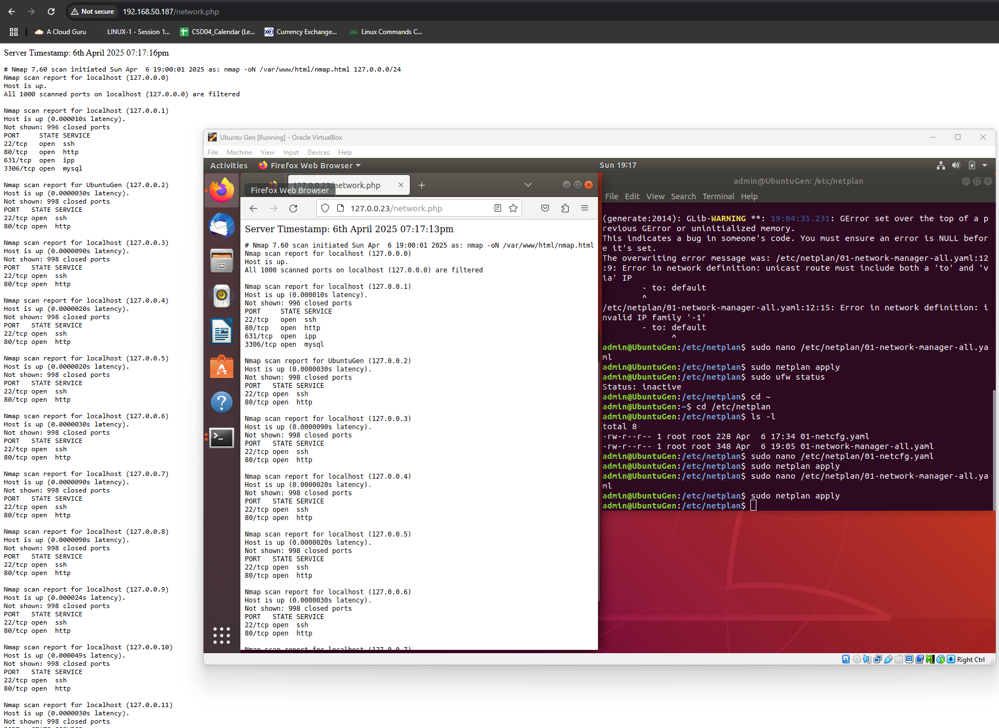
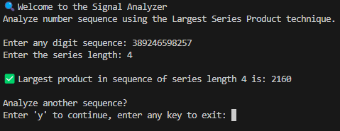

Engineering professional with hands-on experience in cloud support, DevOps, technical consulting, and product development. Background
includes providing technical support, conducting training sessions, and troubleshooting systems across various industries. Familiar
with cloud infrastructure, automation, CI/CD pipelines, Linux, and Infrastructure as Code. A collaborative team player with experience
in customer engagement and cross-functional projects. Outside of work, I actively participate in cheerleading, which has helped strengthen
my communication and teamwork skills.
Professional Development
Temasek Polytechnic - Generation Singapore
Cloud Support and DevOps Trainee (March 2025 - June 2025)
• Learn how to design secure cloud infrastructure and use Infrastructure as Code (IaC) and Linux.
• Build practical skills in automation, troubleshooting, and managing cloud systems.
• Apply DevOps practices by setting up CI/CD pipelines and using operational tools.
• Gain the ability to optimize software development and handle complex cloud environments confidently.
Professional Experience
SBG Systems Pte Ltd
Junior Field Application Engineer (September 2023 - March 2024)
• Provide pre- and post-sales technical support to customers across various stages of the sales cycle.
• Troubleshoot customer issues remotely to ensure effective and timely problem resolution.
• Build and assemble test equipment to support product validation and demonstrations.
• Conduct remote onboarding and training sessions to ensure smooth customer adoption.
• Support sales efforts by participating in trade shows (such as Singapore Airshow & GeoConnect Asia) and contributing to online support content.
Techsource Systems Pte Ltd
Customer Success/ Field Application Engineer (November 2021 - January 2023)
• Engage customers to understand their technical and business challenges through pre-sales consultations.
• Demonstrate how MATLAB/Simulink addresses needs in education, research, and commercial projects.
• Promote MathWorks tools as effective solutions for teaching and learning programming concepts.
• Support customers post-sale by onboarding them and highlighting new product features.
• Conduct online seminars and in-person workshops to drive awareness and adoption across APAC institutions.
Panasonic Appliances Refrigeration Devices Singapore Pte Ltd
Research and Development Engineer (April 2017 - September 2021)
• Perform failure analysis and root cause investigations on returned and defective products.
• Troubleshoot issues in new and existing products to ensure functionality and reliability.
• Document technical information including AutoCAD drawings, manuals, and updates.
• Collaborate with cross-functional teams to deliver optimal customer-focused solutions.
• Train and mentor new staff while contributing to cost-saving projects like product rework.
• Coordinated a rework project, recovering about S$100k of potential loss.
Skills
Cloud and DevOps Engineering
– Experienced in designing secure cloud infrastructures, implementing Infrastructure as Code (IaC), and managing CI/CD pipelines
using tools like GitLab.
Technical Support & Customer Enablement
– Experienced in providing pre- and post-sales technical support, conducting remote troubleshooting, and delivering onboarding
and training sessions to ensure customer success.
Cross-Functional Collaboration & Solution Delivery
– Skilled in collaborating with cross-functional teams to develop optimal solutions, participating in trade shows for lead
generation, and contributing to online support content development.
Hobbies and Interests
Outside of tech, I’m actively involved in the cheerleading community, which has helped me develop teamwork, discipline, and a strong sense of collaboration. Being part of a team that performs under pressure has taught me a lot about trust and communication—skills I find valuable in both sports and work settings.
I'm also interested in the culinary world, especially Japanese sake. I’ve earned a certification as an International Kikisake-shi (Sake Sommelier), which gave me a deeper appreciation for food culture and the details that go into craft and tradition. I enjoy exploring interests that challenge me in different ways and keep me curious.
Projects

My First Web App
Creating a Simple Network Scanner that is accessible from a web browser on the network, using a Cron Job every 10 minutes to
trigger nmap to scan the network and output the results into a text file. A php file is then used to format the text file,
add a few things, and present the results on a web browser.
My First Webpage
Applying my knowledge of Python and Flask to create a Portfolio website. For this project, a free web-hosting site was used
to host the website, where I used Flask to create a simple web server that serves the HTML files. I've also integrated a MySQL
database into the website which allows new user registration. The website is responsive and works on both mobile and desktop.
The website is still a work in progress.

Python Signal Analyser
Creating a Python program that implements the Largest Series Product analysis for a given input sequence and series length.
This can be used to scan encrypted signals for patterns by identifying the most "potent" clusters of digits.
The program takes in a sequence of digits and a series length, and returns the largest product of the series length
of digits in the sequence. It also includes error handling for invalid inputs and edge cases.
E-Commerce Project
This is a group project of 4 for an E-Commerce website proposal based on Microsoft Azure tools as part our capstone project
for the Cloud Support and DevOps Bootcamp Programme.
Mock-up Website
This is the mock-up website for the E-Commerce project. Due to the scale of the website, please enter fullscreen mode for a better experience.